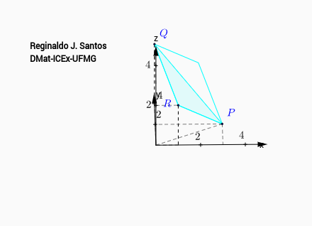

Animação mostrando um triângulo no espaço
$$P=(3,2,0),\quad Q=(0,4,3)\quad\mbox{e}\quad R=(1,0,2).$$ Sejam
$$V=\stackrel{\longrightarrow}{RP}=
(3-1,2-0,0-2)=(2,2,-2)$$
$$W=\stackrel{\longrightarrow}{RQ}=
(0-1,4-0,3-2)=(-1,4,1)\,.$$ Então,
$$V\times W=(10,0,10)=10(1,0,1).$$
A área do triângulo $PQR$ é a metade da área do paralelogramo com
lados determinados por $V$ e $W$. Assim,
$$\mbox{Área}=\frac{1}{2}||V\times W||=5\sqrt{2}.$$
